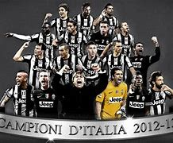

Click aqui para volver al inicio
4.Fútbol en Europa
Las principales ligas de Europa sin contar la liga española son:
La Premier League de Inglaterra
Fue fundada en 1992 y la componen 20 equipos
El Manchester United es el equipo que más veces la ha ganado con un total de 20
La Serie A de Italia
Fue fundada en 1929 y la componen 20 equipos
La Juventus es el equipo que en mas ocasiones la ha ganado con un total de 36

La Bundesliga de Alemania
Fue fundada en 1962 y la componen 18 equipos
El Bayern de Munich es el máximo ganador de la competición con un total de 33 veces
La Ligue One de Francia
Fue fundada en 1932 y la componen 18 equipos
El Paris Saint-Germain es el máximo vencedor de la competición con un total de 12 títulos